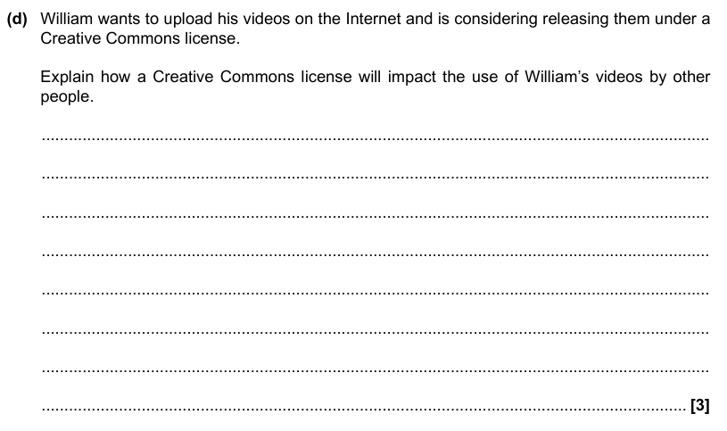

Computing Laws
By Jeetaditya Chatterjee
a bunch of faff
Press s for speaker notes
Data Protection act of 2018
Lawfulness, Fairness and transparency
There must be a valid reasons to collect data
You must not breach any laws with this data
Data can only be used in ways that are fair, so it must be processed in a way that is not damaging, unexpected or misleading
the collection must be open and honest from the start, it must say how they will use the data.
Purpose Limitation
the purpose of processing this data must be clear from the beginning.
the purpose must be documented and specified in privacy information that is communicated to individuals
Data must not be used for a new purpose unless its compatible with the old one. if needed new consent must be taken for this new use case
Data minimisation
the Data in question needs to be
adequate
relevant
limited (to what is needed)
Accuracy of held data
All reasonable steps must be taken to ensure data is correct and not misleading
Data must be kept up to date
if data is incorrect it needs to be corrected or erased asap
any challenges to the accuracy of this data must be considered
Storage limitations
if data is no longer needed it should not be kept
how long data is kept for must be justified and specified in a policy statement
there needs to be a periodic review of the data in hand and any not needed should be erased or anonymised.
If a user requests data erasure that means organisations need to comply (its a right for the consumer)
Data can be kept for longer only if its kept in for public interest archiving, scientific or historical research, or stats purposes
Security measures
Accountability
Questions!
Name one principal of the data protection act.
Which one of these is
NOT
a principal of the data protection act
Security
Accountability
Data minimisation
Integrity
Which of these is a sub principal of
Purpose limitation
there must be a valid reason to collect the data
All reasonable steps must be taken to ensure data is correct and not misleading
the purpose of processing this data must be clear from the beginning.
Data must be kept up to date
Computer Misuse act of 1990
Copyright, Designs and Patents Act 1988 (CDPA)
Software Licensing.
Proprietary Licensing
Open Source Licensing
Creative Commons
Questions (2)
WHat are the seven principal’s of the data protection act
What is the purpose of the computer misuse act
Describe creative commons
What licence should someone use if they wanted to put a picture on the internet but does not want companies to use it
Name 2 differences between proprietary and open source software.
Exam question.
